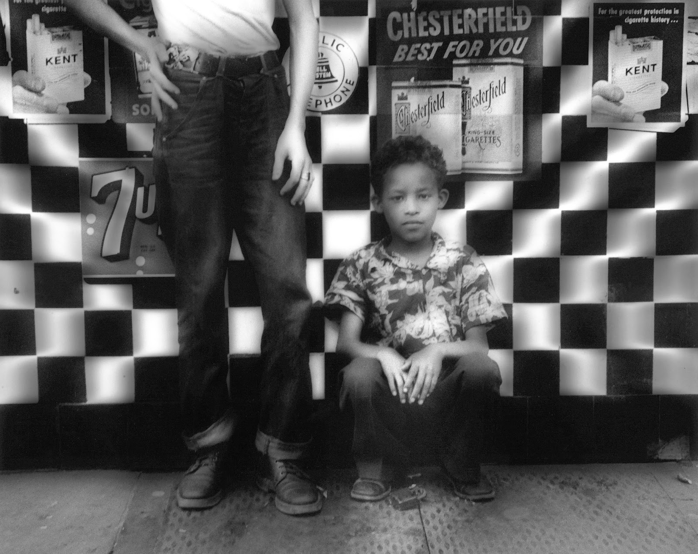
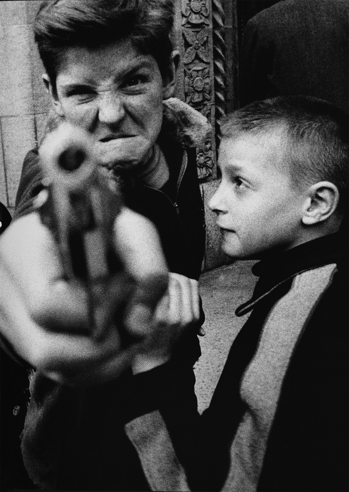
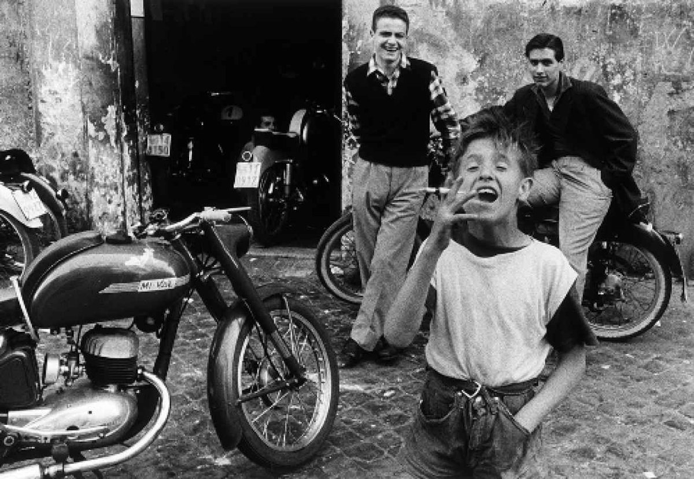
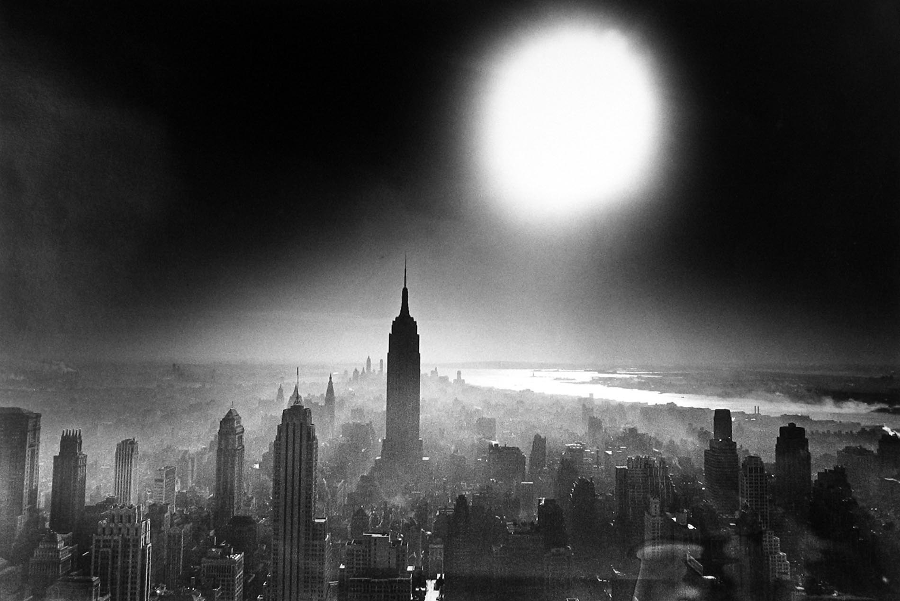
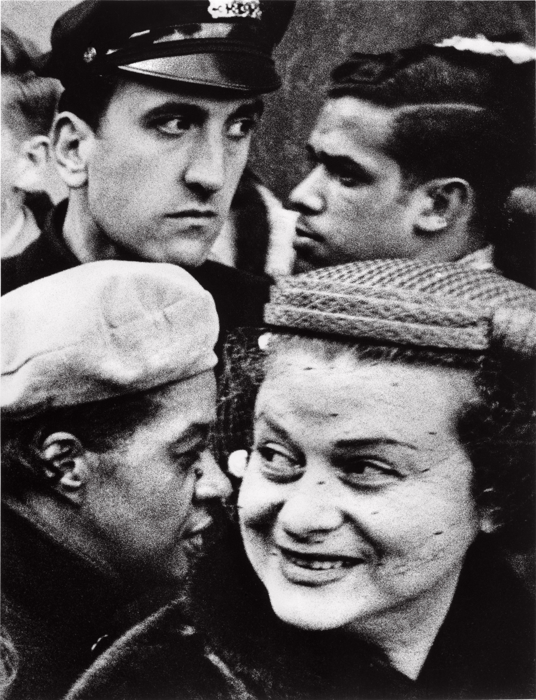
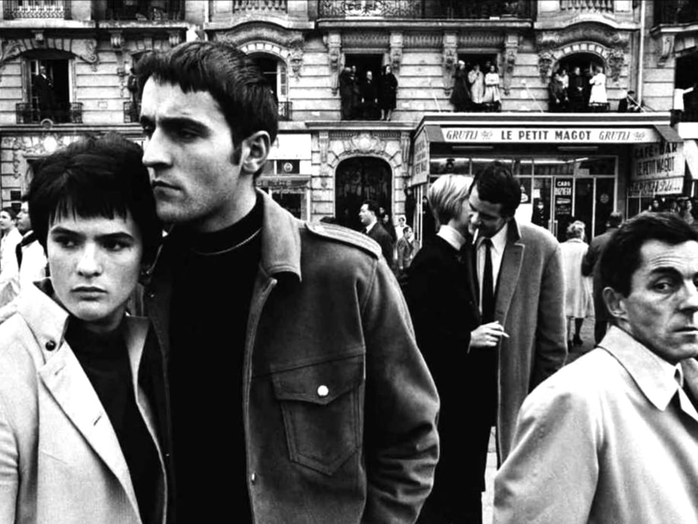
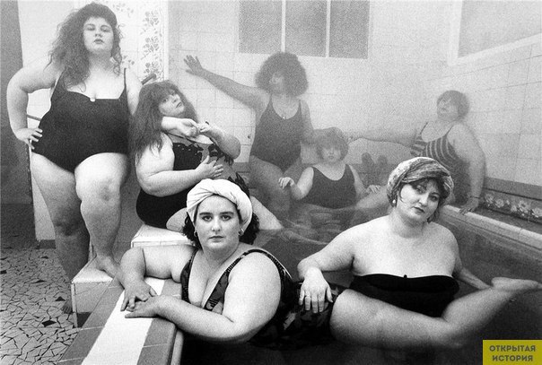

摄影大师印象（四） —— William Klein
William Klein是抽象派画家出身。他用黑白高反差、大颗粒、虚焦、裁切、广角、动乱等来挑战传统，尤其是针对布列松的“摄影师不影响现场，作为事件记录者……”和一些构图理论。他用广角镜头近距离直击现场，和被拍人士相当接近并形成互动，使摄影师也成为现场的一部份，而非身在世外的旁观者。
 Klein在访谈中说自己在暗房中用炭笔之类的东西做后期。
 “他只有十一岁，却学会了人世间一切狰狞。”（摆拍照，还有一张拿枪小男孩很童真笑的照片 -__-）
 网上William Klein的照片多没有标注拍摄时间、地点和描述。这张像是在罗马或者巴黎拍的。 Klein喜欢用小孩子和烟、枪相结合的对比来表达城市的堕落与暴力。
 这张纽约照片影响了远在日本的一群年轻人，其中有森山大道。森山大道惊讶于摄影师对于自己个性想法强烈直接的表达后，也走上了探寻表达自己的道路。纽约常态并非是这样子，只是Klein用自己的摄影来表达自己的看法。
 不讲传统美学规则，不讲清晰构图，大胆裁切，成为了对当时摄影界的”挑衅“。第一时间给传统摄影、布列松理论捅了几刀子。先于 Robert Frank刚出版了《美国人》，这就伟大了 ^_^~
 其实Klein一些图还是有受布列松影响，层次分明，几何构图。
 用浴室和一群胖女人，摆POSE来讽刺所谓时尚吧，虽然他也为VOGUE工作。这幅图其实极具美感，我怀疑是不是对某副油画的再现。。。。
William Klein更为旗帜鲜明的挑战传统摄影，抗击所谓不在场的客观，挑战既有规则，首先拉开了当代摄影的序幕。从此，摄影对于规则、理性、客观、唯美开始反抗……时至今日的大部份摄影人，还常开口闭口布列松。如果本身是专业人士的话，那更是应当羞愧的了。
题外话：William Klein把纽约拍的像末世，像地底的世界又无视传统规则惹来一群人的批评，但仍在拍Vogue，50年代后期他转行拍实验电影，直至80年代拍了部富有挑战性的电影，而被法国政府封杀，也被美国Vogue解雇。我们看下他在1958年拍摄的《Broadway by Light》吧，我感觉森山大道是不是看过这片子，或者两位大师巧合之下都具有相近的感受吧。（需翻墙）